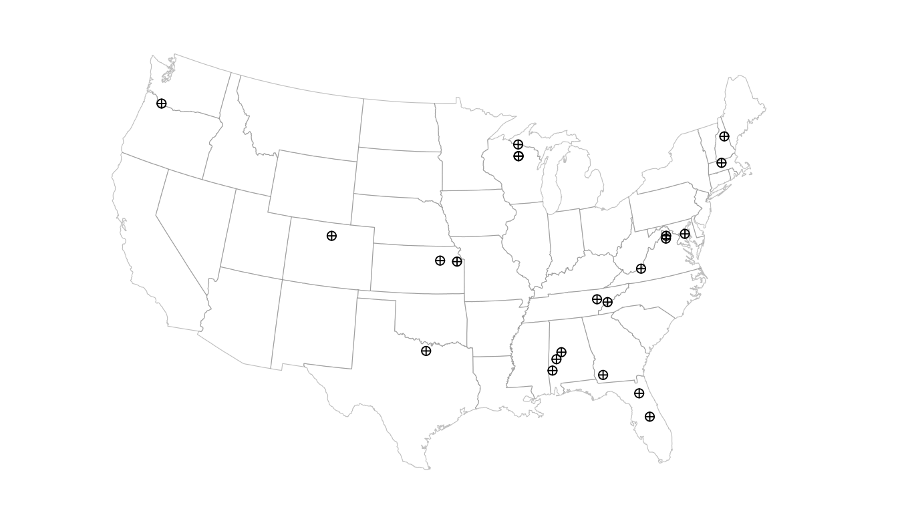
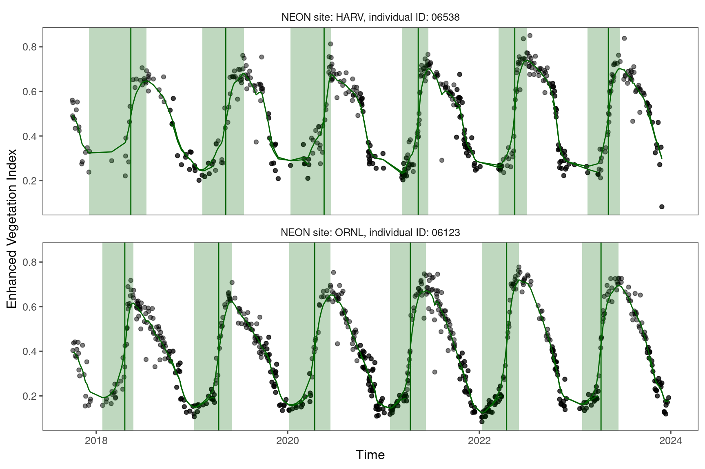
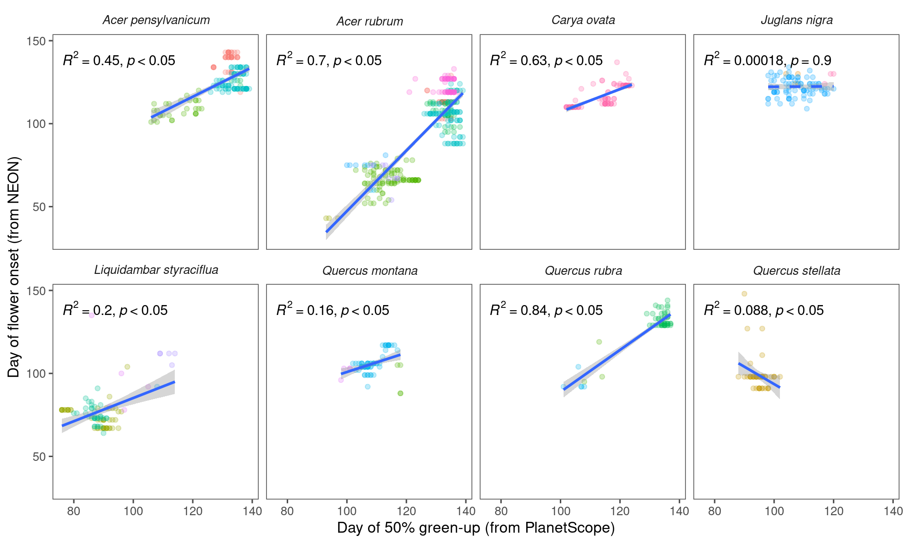
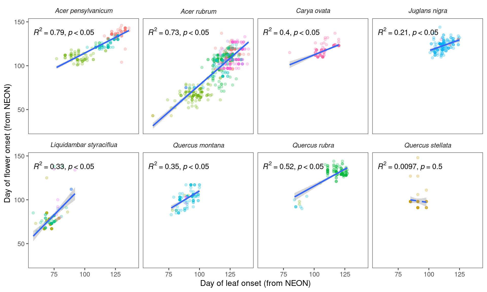

2 Tree-level flowering phenology
PlanetScope-derived vegetative phenology correlates with flowering phenology derived from NEON.
2.1 Data
Read NEON phenometrics data prepared in the phenology-sample-data project.

Read in NEON PlanetScope data (day of year) prepared with the batchplanet package.

2.2 Analysis
Correlation between 50% green-up time from PlanetScope and flower onset time from NEON.

Correlation between leaf and flower onset time from NEON.

![Individual phenological observations extracted from PlanetScope (PS) and National Ecological Observatory Network (NEON) for wind-pollinated taxa. (A) Extraction of individual-level phenological metric from PS data, showing Enhanced Vegetation Index (black point), smoothed Enhanced Vegetation Index (green line), period of green-up (green shade), and extracted 50% green-up time (vertical green line), using two individuals at HARV and ORNL sites as examples. (B) Correlation between time of 50% green-up from PS and time of flower onset from NEON.](RS4flower_files/figure-html/unnamed-chunk-51-1.png)
Figure 2.1: Individual phenological observations extracted from PlanetScope (PS) and National Ecological Observatory Network (NEON) for wind-pollinated taxa. (A) Extraction of individual-level phenological metric from PS data, showing Enhanced Vegetation Index (black point), smoothed Enhanced Vegetation Index (green line), period of green-up (green shade), and extracted 50% green-up time (vertical green line), using two individuals at HARV and ORNL sites as examples. (B) Correlation between time of 50% green-up from PS and time of flower onset from NEON.